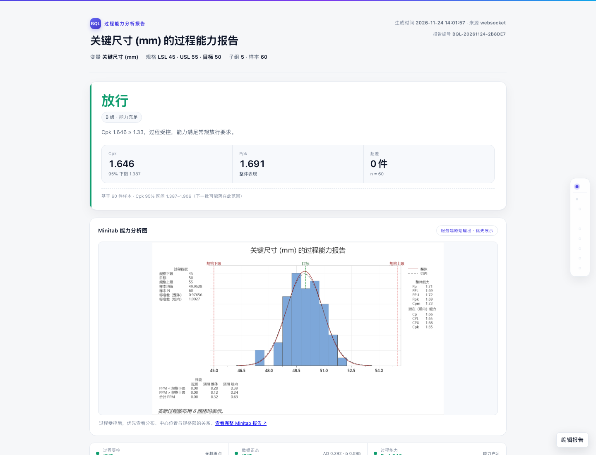

完整的 Minitab 能力入口
SPC、MSA、控制图、假设检验、回归与 DOE、分布与可靠性、图形可视化。
面向质量与制造团队的 Minitab MCP。让 Agent 直接调用 SPC、MSA、控制图、回归与 DOE 等完整能力，并把结果整理成可审核、可导出的质量报告。
帮我安装最新版 BQL Minitab MCP，并完成客户端注册和自检。

01 / Capabilities
不止 SPC。110 个 Minitab 接口覆盖质量诊断、实验设计与可靠性，一套标准 MCP 协议统一调用，并把结果整理成可交付报告。
SPC、MSA、控制图、假设检验、回归与 DOE、分布与可靠性、图形可视化。
标题、结论与布局可编辑，Minitab 图表原样呈现，一键导出 PDF 或 Word，减少人工整理与复制。
报告工作台独立运行并使用本地权限令牌；Agent 重连后，历史分析与报告仍可访问。
02 / Workflow
用自然语言给出数据、规格和业务问题。
Agent 通过标准 MCP 工具调用 Minitab 分析。
审阅结论、调整报告，并交付 PDF 或 Word。
“分析这组关键尺寸数据，规格 45–55，目标 50，子组 5；检查过程能力并生成一份可编辑的 Minitab 分析报告。”
03 / Install
安装器会创建独立 Python 环境、下载 Minitab MCP，并自动注册 WorkBuddy、Codex、Cursor 与 Claude Desktop。
curl -fsSL https://github.com/adymilk/bql-mcp/raw/refs/heads/main/install.sh | bash